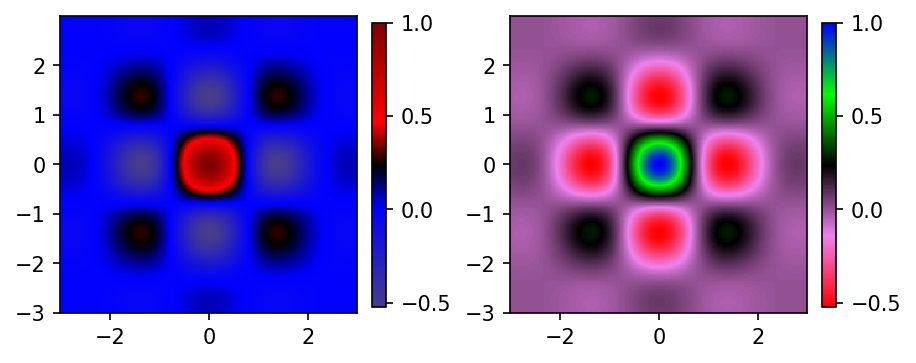
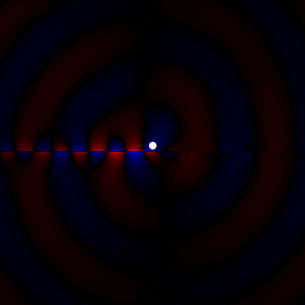

Circular dipole launch plasmon
Contents
2.1. Circular dipole launch plasmon#
import meep as mp
from meep.materials import Al, Ag, Au, SiO2
import numpy as np
## Define a color map
import numpy as np
import matplotlib.pyplot as plt
from matplotlib import cm
from matplotlib.colors import ListedColormap, LinearSegmentedColormap
##
def plot_examples(colormaps):
"""
Helper function to plot data with associated colormap.
"""
delta = 0.025
x = y = np.arange(-3.0, 3.0, delta)
X, Y = np.meshgrid(x, y)
Z = np.exp(-0.3*X**2 - 0.3* Y**2) * np.cos(2*X) * np.cos(2*Y)
n = len(colormaps)
fig, axs = plt.subplots(1, n, figsize=(n * 2 + 2, 3),
constrained_layout=True, squeeze=False,dpi=150)
for [ax, cmap] in zip(axs.flat, colormaps):
psm = ax.pcolormesh(X,Y,Z,cmap=cmap, rasterized=True,shading='auto')
ax.set_aspect('equal', 'box')
fig.colorbar(psm, ax=ax,shrink=0.65)
plt.show()
##
colors = ["darkslateblue","blue", "black", "red","maroon"]
nodes = [0.0,0.35, 0.5, 0.65, 1.0]
mycmap = LinearSegmentedColormap.from_list("mycmap", list(zip(nodes, colors)))
colors1 = ["red","violet", "black", "lime","blue"]
nodes1 = [0.0,0.25, 0.5, 0.75, 1.0]
mycmap1 = LinearSegmentedColormap.from_list("mycmap1", list(zip(nodes1, colors1)))
plot_examples([mycmap,mycmap1])

cell = mp.Vector3(3,3,0)
geometry = [ mp.Block(mp.Vector3(mp.inf,0.005,mp.inf),
center=mp.Vector3(),
material=Ag)
]
cell = mp.Vector3(3,3,0)
geometry = [ mp.Block(mp.Vector3(mp.inf,0.005,mp.inf),
center=mp.Vector3(),
material=Ag)
]
sources = [mp.Source(mp.ContinuousSource(frequency=2),
component=mp.Ey,
center=mp.Vector3(0,0.04),
size=mp.Vector3(0,0)),
mp.Source(mp.ContinuousSource(frequency=2),
component=mp.Ex,
center=mp.Vector3(0,0.04),
size=mp.Vector3(0,0.0),
amplitude=0+1j)]
pml_layers = [mp.PML(0.2)]
resolution = 100
sim = mp.Simulation(cell_size=cell,
boundary_layers=pml_layers,
geometry=geometry,
sources=sources,
resolution=resolution)
from matplotlib import pyplot as plt
%matplotlib inline
plt.figure(dpi=100)
sim.plot2D()
plt.show()
block, center = (0,0,0)
size (1e+20,0.005,1e+20)
axes (1,0,0), (0,1,0), (0,0,1)
dielectric constant epsilon diagonal = (1,1,1)
sim.run(until=6)
fig = plt.figure(dpi=100)
#fig, ax = plt.subplots(dpi=300)
ax = plt.Axes(fig, [0.0, 0.0, 1, 1])
ax.set_axis_off()
fig.add_axes(ax)
#plt.figure(dpi=300)
sim.plot2D(ax=ax,fields=mp.Ey,plot_boundaries_flag=False,labels=False,
field_parameters={'alpha':1, 'cmap':mycmap1,'post_process':np.real}
,source_parameters={'alpha':1,'color':'white','linewidth':1.5,'hatch':'o'})
plt.show()
-----------
Initializing structure...
time for choose_chunkdivision = 0.00019002 s
Working in 2D dimensions.
Computational cell is 3 x 3 x 0 with resolution 100
block, center = (0,0,0)
size (1e+20,0.005,1e+20)
axes (1,0,0), (0,1,0), (0,0,1)
dielectric constant epsilon diagonal = (1,1,1)
time for set_epsilon = 0.119971 s
lorentzian susceptibility: frequency=16.365, gamma=1.95106
lorentzian susceptibility: frequency=7.32593, gamma=0.738804
lorentzian susceptibility: frequency=6.60165, gamma=0.052426
lorentzian susceptibility: frequency=3.61417, gamma=0.364563
lorentzian susceptibility: frequency=0.658148, gamma=3.13427
drude susceptibility: frequency=1e-10, gamma=0.0387146
-----------
run 0 finished at t = 6.0 (1200 timesteps)
block, center = (0,0,0)
size (1e+20,0.005,1e+20)
axes (1,0,0), (0,1,0), (0,0,1)
dielectric constant epsilon diagonal = (1,1,1)
def modu_f(fd):
output = np.sign(fd) * np.abs(fd) ** 0.7
return output
#sim.reset_meep()
f = plt.figure(dpi=300)
#ax = plt.Axes(f, [0.0, 0.0, 1, 1])
#ax.set_axis_off()
#fig.add_axes(ax)
#plt.axis('off')
Animate = mp.Animate2D(sim,plot_boundaries_flag=False,
fields=mp.Ey, f=f, realtime=False, normalize=True,field_parameters={'post_process':modu_f,'alpha':1, 'cmap':mycmap}
,source_parameters={'alpha':1,'color':'white','linewidth':0.5,'hatch':''})
plt.close()
sim.run(mp.at_every(0.02,Animate),until=1-0.02)
plt.close()
block, center = (0,0,0)
size (1e+20,0.005,1e+20)
axes (1,0,0), (0,1,0), (0,0,1)
dielectric constant epsilon diagonal = (1,1,1)
Normalizing field data...
run 1 finished at t = 6.98 (1396 timesteps)
#filename = "dr.mp4"
gifname = "c_dr_plasmon_untrim.gif"
#Animate.to_mp4(10,filename)
Animate.to_gif(6,gifname)
## use imagemagick, +repage to remove virtual canvus
! convert c_dr_plasmon_untrim.gif -crop 600x600+623+299 +repage c_dr_plasmon.gif
Generating GIF...
2.1.1. Circular dipole and SPPs, spin-momentum locking#
